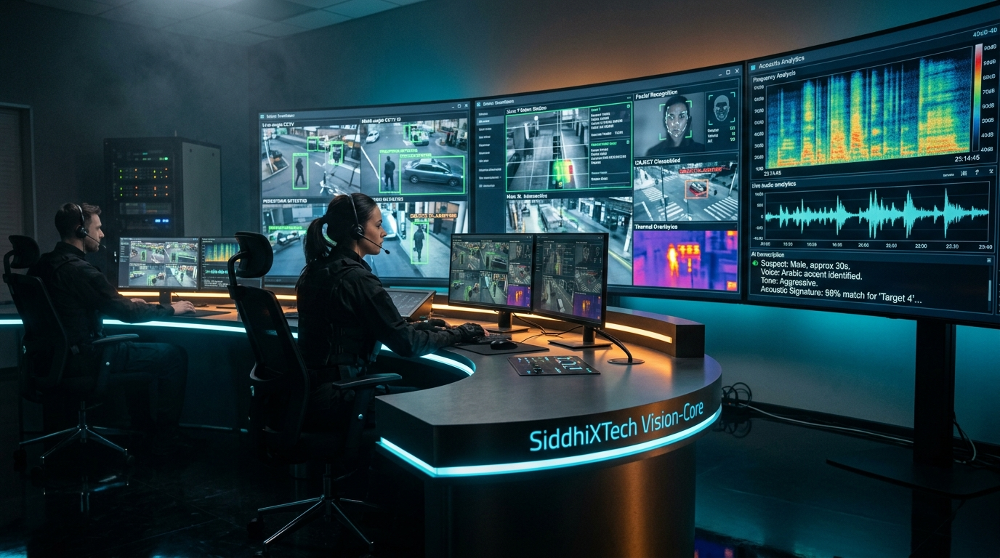

Real-time camera feed analysis, object detection & inmate call auditing.
SiddhiXTech engineers deep neural vision and acoustic AI pipelines that transform existing camera networks and communication lines into automated threat detection systems. Purpose-built for correctional jails, detention centers, and high-security enterprise facilities.

Engineered for environments where human monitoring cannot scale.
Correctional facilities and high-security campuses generate thousands of hours of video and audio daily. Our deep neural networks continuously analyze every stream in real time, eliminating guard fatigue and manual blind spots:
Camera Feed Analysis & Object Detection
Continuous edge and cloud inference across hundreds of live video streams. Automatically identifies prohibited objects, tracks cross-camera movement, and establishes instant perimeter alarms.
- Contraband & Phone Detection: Detects concealed mobile phones, weapons, and narcotics during transit or visiting hours.
- Virtual Tripwires & Loitering: Custom boundary lines that trigger instant alerts when breached or when subjects linger in sterile zones.
- Physical Altercation Recognition: Neural pose estimation and optical flow algorithms that flag aggressive physical fights within 1.2 seconds.
- Cross-Camera Re-Identification: Reconstructs a subject's full trajectory across multiple non-overlapping camera views without relying on facial recognition.
Inmate Phone & Video Call Auditing
A specialized acoustic intelligence suite designed specifically for jail inmate phone and video visitation terminals. Intercepts security violations before harm occurs.
- Speaker Diarization: Isolates the inmate's voice from external contacts and background terminal ambient noise.
- Coded Slang & Keyword Spotting: Context-aware natural language processing detects concealed narcotics transactions, gang slang, and intimidation codes.
- Vocal Stress & Deception Profiling: Analyzes micro-tremors and fundamental frequency shifts ($F_0$) to assign a real-time vocal stress index.
- 3-Way Call & Bridge Detection: Detects unauthorized phone bridging or third-party call transfers in real time.
Natural Language Cross-Feed Search
Accelerate post-incident investigations from days to seconds. Investigators can search entire video archives using everyday natural language descriptions.
- Semantic Search Queries: "Find all subjects in orange jumpsuits carrying a white package near the laundry chute between 13:00 and 15:00".
- Synchronized Multi-Angle Playback: Instant four-camera synchronized replay of any flagged incident.
- Courtroom Evidence Packaging: One-click export of cryptographically signed video, audio, and transcript bundles with verifiable SHA-256 hash chains.
- Tamper-Proof Audit Logging: Immutable operator action records complying with CJIS and law enforcement forensic standards.
Works With Your Existing Infrastructure
No need to replace existing cameras or phone systems. SiddhiXTech interfaces directly with industry-standard hardware and video management systems (VMS).
- Universal Camera Support: Native RTSP, RTMP, and ONVIF profile S/G/T protocol support across Hikvision, Dahua, Axis, Hanwha, and Bosch.
- Edge Acceleration: Optimized for NVIDIA Jetson, TensorRT, and PCIe edge accelerators for on-premise sub-100ms inference.
- Air-Gapped & Offline Deployment: Fully deployable on isolated, classified, or air-gapped on-premise networks with zero cloud dependencies.
- VMS & Dispatch Webhooks: Webhook and API integrations with Milestone XProtect, Genetec Security Center, and central CAD dispatch.
Test the AI Surveillance & Acoustic Intelligence Suite
Explore our 4-module command center dashboard to see live camera feed telemetry, prioritized facility anomaly alerts, monitored inmate call auditing, and semantic forensic search:
Active Security Alerts (3 Unresolved)
Auto-prioritized by AI Threat ScoreLocation: Cell Block B (Tier 2, Cell 214) · Camera: CAM-14 · Timestamp: 2 mins ago
Computer vision detected reflection and contour of a smartphone concealed during laundry basket transfer.
Sensor: Acoustic Array MIC-03 · Timestamp: 7 mins ago · Decibel Surge: +26 dB
Audio neural network detected elevated vocal stress frequencies, shouting phonemes, and rapid physical displacement sounds.
Location: Perimeter Line 01 (Outer East Fence) · Camera: CAM-08 Thermal · Timestamp: 18 mins ago
Subject lingered within 1 meter of sterile buffer boundary for >45 seconds during shift change.
Active Monitored Call: Station #09 (Block C)
Inmate: Marcus Vance (#4802-D) · Outbound: +1 (206) 555-0194 · Call Duration: 04:18 / 15:00
[03:12] Inmate #4802-D: "Did you talk to the cousin about the green drop on 4th?" ⚠️ NARCOTICS SLANG: "green drop"
[03:16] External Contact: "Yeah, he said he's linking up with Donnie by the loading bay before visiting hour." ⚠️ LOCATION IDENTIFIER: "loading bay"
[03:22] Inmate #4802-D: "Make sure it's taped underneath the third blue tray during Friday lunch count." 🚨 CONTRABAND TRANSFER PROTOCOL FLAGGED
Forensic Investigation & Semantic Cross-Feed Search
Search hundreds of hours of recorded camera feeds and calls using plain language queries.
Inmate Marcus Vance (#4802-D) observed passing unidentified white package to laundry cart attendant.
Attendant transferred cart into Cell 214. Cross-referenced with active cell phone detection alert.
Flexible deployment suited for classified and zero-trust environments.
Air-Gapped Local Cluster
Run 100% locally on dedicated GPU servers (NVIDIA RTX / A-Series) inside your secure facility server room. Zero data leaves your local network, ensuring absolute compliance with correctional and defense standards.
- Zero internet or WAN connection required
- Local cryptographic storage of all audio/video evidence
- Compatible with existing local NVR/DVR arrays
Centralized Multi-Site Intelligence
Deploy edge inference units at remote regional jails and facilities while streaming unified metadata, alert feeds, and threat scoring to a centralized statewide headquarters dashboard.
- Statewide correctional inmate tracking across facilities
- Centralized voice biometrics database
- Cross-facility gang network and contraband intelligence